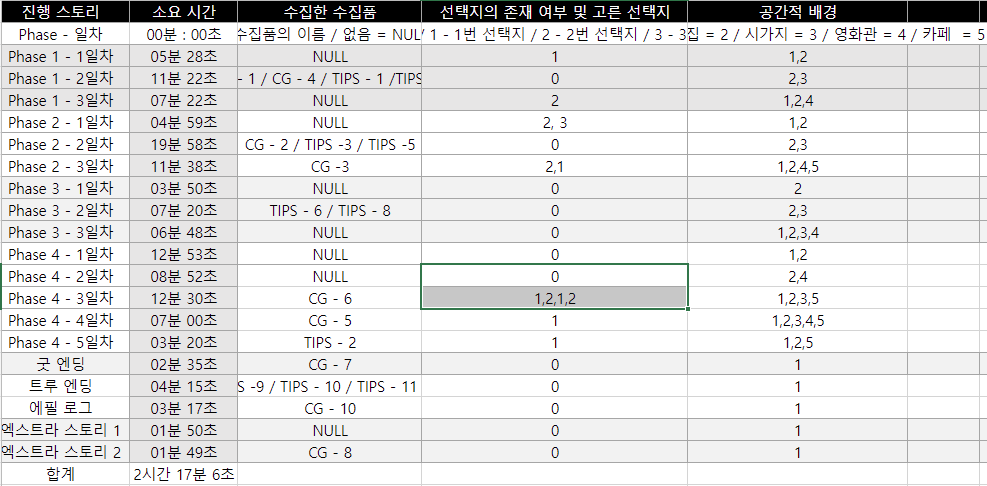
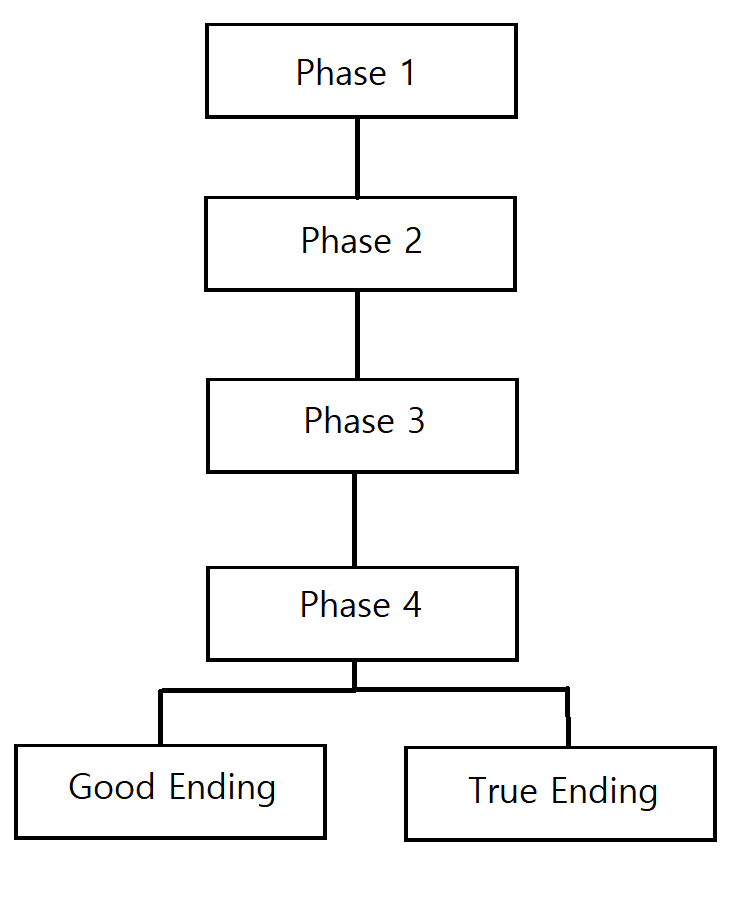

2. 게임 플레이 기준
게임 스토리 분석 방법
- 등장인물 및 각 파트별 시간, 공간적 배경을 파악
- 게임의 스토리가 "시간을 루프 하는 것" 이므로, 각 페이즈 별로 일어나는 사건들과
주인공들 간의 관계성을 분석
- 분석한 내용을 바탕으로 소설의 구성 5단계에 맞춰 내용을 정리
목표 선정의 이유
- 게임의 플레이 타임이 아주 긴 편이 아니고, 멀티 엔딩의 갯수도 많은 편이 아니기
때문에 게임 내에 존재하는 모든 컨텐츠들을 살펴보고 분석하기 위함
3. 게임 플레이 기록 및 스토리 분석
"미래의 여친님이 나에게 인사를 건네왔다" 의 플레이 기록

3. 게임 플레이 기록 및 스토리 분석
스토리 플로우 차트

Phase 1부터 Phase 3까지의 선택지들은 엔딩에 영향을 끼치지 않으며,
Phase 4의 선택지들만이 어떠한 엔딩이 될지 결정함
4. 총평 및 결론
나는 게임에 있어, 스토리는 있으면 좋지만 없어도 상관없는 존재라고
생각한다. 좋은 스토리를 게임에 잘 녹여내여 게임에 몰입할 수 있게
한다면 더할 나위 없이 좋겠지만, 스토리에 집중하느라 게임 플레이가
루즈해진다면 주객전도일 것이다.
그렇기에 보다 스토리에 분석에 집중하기 위해 스토리를 보는 것이
곧 게임 플레이인 비주얼 노벨 장르의 게임을 고르게 되었고,
그렇게 "미래의 여친님이 내게 인사를 건네 왔다" 를 고르게 되었다.
이 게임의 주요한 스토리는 "시간을 뛰어넘는 사랑" 이야기 이다.
어떻게 보면 진부할 수도 있는 이야기이다. 이미 "시간을 달리는 소녀" 등을
통해 대중매체에서 여러번 소비되어왔던 주제이기 때문이다.
하지만 스토리의 큰 틀 자체는 진부하고 장면장면들이 어디선가 봤던것 같은
소위 오마주 같은 것들로 가득 할지 몰라도, 영화 "매트릭스" 처럼
그 안에서 이 작품만의 개성을 살려주는 요소들이 있다면
그 작품은 좋은 스토리를 가졌다고 할 수 있을 것이다.
그러한 면에서 이 게임은 잘 만들어진 게임이라고 생각한다.
게임만이 보여줄 수 있는 연출들, 예를 들어 시간이 루프 할 때마다
타이틀 스크린으로 돌아가 다시 처음부터 한다는 느낌을 주는 식으로
플레이어가 이야기에 몰입할 수 있도록 게임 사이사이에 이러한 요소들이
잘 배치되어있다고 생각하며, 누군가 비주얼 노벨 장르의 게임을 찾는다면
기꺼이 예시로서 추천해줄 만한 게임인것같다.